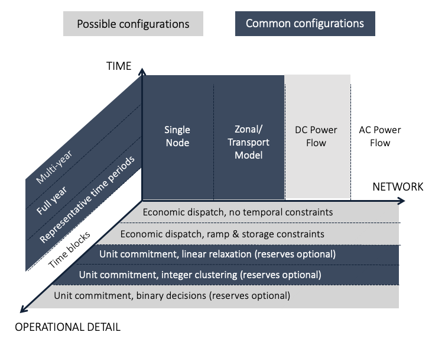

GenX Model Introduction
Introduction
GenX allows for the simultaneous co-optimization of several interlinked power system decision layers, described below:
- Capacity expansion planning (e.g., investment and retirement decisions for a full range of centralized and distributed generation, storage, and demand-side resources)
- Hourly dispatch of generation, storage, and demand-side resources,
- Unit commitment decisions and operational constraints for thermal generators,
- Commitment of generation, storage, and demand-side capacity to meet system operating reserves requirements,
- Commitment of generation, storage, and demand-side capacity to meet capacity reserve requirements,
- Transmission network power flows (including losses) and network expansion decisions, and
- Several optional policy constraints
Depending on the dimensionality of the problem, it may not be possible to model all decision layers at the highest possible resolution of detail, so the GenX model is designed to be highly configurable, allowing the user to specify the level of detail or abstraction along each of these layers or to omit one or more layers from consideration entirely.
For example, while investment and dispatch decisions (Layers 1 and 2) are a consistent feature of the model under all configurations, the user has several options with regards to representing the operational constraints on various thermal power plants (e.g., coal, gas, nuclear, and biomass generators). Unit commitment (e.g., start-up and shut-down) decisions Morales-España et al., 2013 (Layer 3) can be modeled at the individual power plant level (as per De Sisternes Jimenez, 2014); by using an efficient clustering of similar or identical units (as per Palmintier, 2011, Palmintier, 2013, Palmintier, 2014); by using a linear relaxation (or convex hull) of the integer unit commitment constraints set; or ignoring unit commitment decisions entirely and treating generator output as fully continuous. Furthermore, different levels of resolution can be selected for each individual resource type, as desired (e.g., larger thermal units can be represented with integer unit commitment decisions while smaller units can be treated as fully continuous). In such a manner, the model can be configured to represent operating constraints on thermal generators at a level of resolution that achieves a desired balance between abstraction error and computational tractability and provides sufficient accuracy to generate insights for the problem at hand.
The model can also be configured to consider commitment of capacity to supply frequency regulation (symmetric up and down) and operating reserves (up) needed by system operators to robustly resolve short-term uncertainty in demand and renewable energy forecasts and power plant or transmission network failures (Layer 4). Alternatively, reserve commitments can be ignored if desired.
Additionally, the model can approximate resource adequacy requirements through capacity reserve margin requirements at the zonal and/or system level (Layer 5). In this way, the model can approximate varying structure of capacity markets seen in deregulated electricity markets in the U.S. and other regions.
The model also allows for transmission networks to be represented at several levels of detail (Layer 6) including at a zonal level with transport constraints on power flows between zones (as per Mai et al., 2013, Johnston et al., 2013, Hirth, 2017); or as a single zone problem where transmission constraints and flows are ignored. (A DC optimal power flow formulation is in development.) In cases where a nodal or zonal transmission model is employed, network capacity expansion decisions can be modeled or ignored, and transmission losses can be represented either as a linear function of power flows or a piecewise linear approximation of a quadratic function of power flows between nodes or zones (as per Zhang et al., 2013, Fitiwi et al., 2016), with the number of segments in the piecewise approximation specified by the user as desired. In a multi-zonal or nodal configuration, GenX can therefore consider siting generators in different locations, including balancing tradeoffs between access to different renewable resource quality, siting restrictions, and impacts on network congestions, power flows and losses.
GenX also allows the user to specify several optional public policy constraints, such as CO2 emissions limits, minimum energy share requirements (such as renewable portfolio standard or clean energy standard policies), and minimum technology capacity requirements (e.g. technology deployment mandates).
Finally, the model is usually configured to consider a full year of operating decisions at an hourly resolution, but as this is often not tractable when considering large-scale problems with high resolution in other dimensions, GenX is also designed to model a number of subperiods – typically multiday periods of chronologically sequential hourly operating decisions – that can be selected via appropriate statistical clustering methods to represent a full year of operations (De Sisternes Jimenez and Webster, 2013, De Sisternes Jimenez, 2014, Poncelet et al., 2016, Nahmmacher et al., 2016, Blanford et al., 2016, Merrick, 2016, Mallapragada et al., 2018). GenX ships with a built-in time-domain reduction package that uses k-means or k-medoids to cluster raw time series data for demand (load) profiles and resource capacity factor profiles into representative periods during the input processing stage of the model. This method can also consider extreme points in the time series to capture noteworthy periods or periods with notably poor fits.
With appropriate configuration of the model, GenX thus allows the user to tractably consider several interlinking decision layers in a single, monolithic optimization problem that would otherwise have been necessary to solve in different separated stages or models. The following figure reflects the range of configurations currently possible along the three key dimensions of chronological detail, operational detail, and network detail.
 Figure. Range of configurations currently implemented in GenX along three key dimensions of model resolution
The model can be configured to consider a single future planning year or multiple planning stages (or investment periods) in sequence.
- In single-stage planning mode, the model formulation is static, in the sense that its objective is not to determine when investments should take place over time, but rather to produce a snapshot of the minimum-cost generation capacity mix to meet demand at least cost under some pre-specified future conditions.
- The user can formulate and solve a deterministic multi-stage planning problem with perfect foresight i.e. demand, cost, and policy assumptions about all stages are known and exploited to determine the least-cost investment trajectory for the entire period. The solution of this multi-stage problem relies on exploiting the decomposable nature of the multi-stage problem via the implementation of the dual dynamic programming algorithm, described in Lara et al. 2018 here.
- The user can formulate a sequential, myopic multi-stage planning problem, where the model solves a sequence of single-stage investment planning problems wherein investment decisions in each stage are individually optimized to meet demand given assumptions for the current planning stage and with investment decisions from previous stages treated as inputs for the current stage. We refer to this as "myopic" (or shortsighted) mode since the solution does not account for information about future stages in determining investments for a given stage. This version is generally more computationally efficient than the deterministic multi-stage expansion with perfect foresight mode.
More information on the two sequential, multi-stage planning modes can be found in the section on Multi-stage under the Model function reference tab.
Uses
From a centralized planning perspective, the GenX model can help to determine the investments needed to supply future electricity demand at minimum cost, as is common in least-cost utility planning or integrated resource planning processes. In the context of liberalized markets, the model can be used by regulators and policy makers for indicative energy planning or policy analysis in order to establish a long-term vision of efficient market and policy outcomes. The model can also be used for techno-economic assessment of emerging electricity generation, storage, and demand-side resources and to enumerate the effect of parametric uncertainty (e.g., technology costs, fuel costs, demand, policy decisions) on the system-wide value or role of different resources.